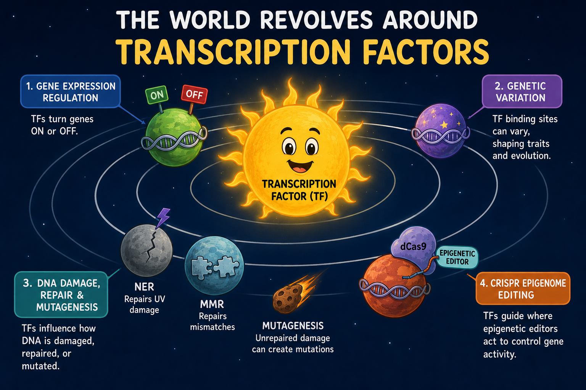
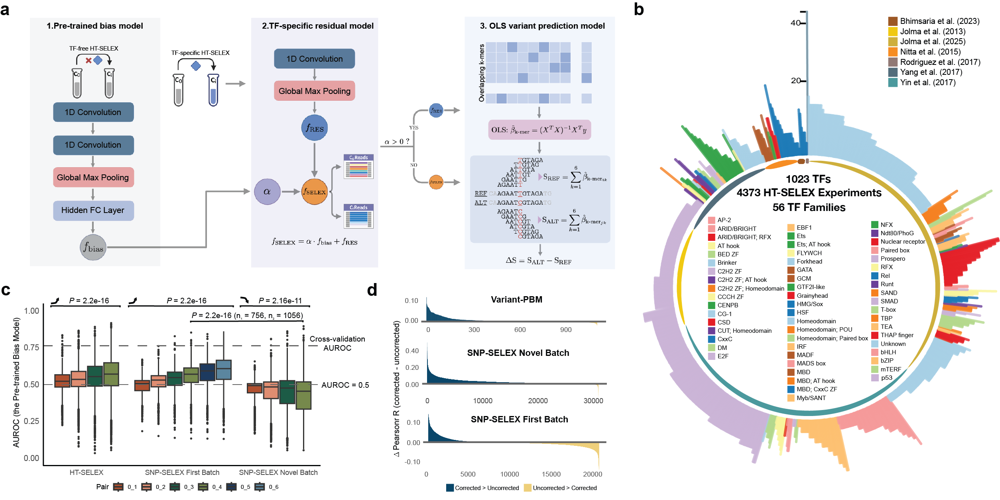
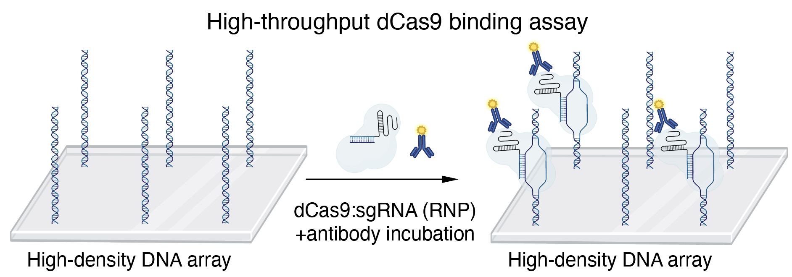

Regulatory genomics
We study how human transcription factors find their genomic targets and how sequence variation changes binding and gene regulation.
What we do
We investigate how transcription factors recognize DNA—and how these interactions shape gene regulation, genetic variation, genome editing, DNA repair, and mutagenesis.

We study how human transcription factors find their genomic targets and how sequence variation changes binding and gene regulation.

We investigate how transcription factors influence DNA lesion formation, repair pathway access, and mutation rates at regulatory sites.

We measure the sequence specificity of dCas9 and dCas12a systems to improve the precision of programmable genome regulation.